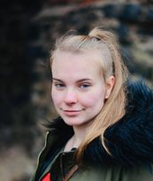

O nás
Jsme studentky vysokých škol a rády motivujeme ostatní k dosažení jejich cílů. Poslední dobou jsme si začaly všímat, že lidé kolem nás jsou velmi demotivovaní, nebaví je jejich práce, vzdělávání je pro ně nuda a neví, jak naložit se svým volným časem, kterého je v koronavirovém období mnoho. Demotivace s každým dalším dnem roste a většina si umí jen stěžovat na současnou situaci, ale nevidí možnosti, které jim to zárověň může dát. Tráví tak celý den u počítače či televize. Zima je už ale za námi a začíná jaro. Příroda se probouzí, tak se pojďme probudit i my.
Rády bychom vám pomohly získat zpět motivaci. Na našem blogu můžete najít užitečné tipy, jak si stanovit cíle, které jsou velmi důležité při cestě k úspěchu, jak z aktivity vytvořit zvyk a jak udržet disciplínu a nepolevit. Přiznáváme, že to bude cesta na dlouhou trať a nic se nezmění přes noc. Jako vše i získání naší motivace a disciplíny potřebuje čas. Není ale důvod se strachovat. Na našem instagramu s námi můžeš sdílet své úspěchy i neúspěchy. Chceme propojit všechny lidi, kteří s námi půjdou do této výzvy, takže v tom nikdo nebude sám.
Denča
Je mi 19 let a jsem studentkou 1. ročníku na Ostravské univerzitě. Studuji obor Experimentální biologie a tento rok se hlásím na další obor - bioinformatika. Volné dny nejraději trávím v přírodě a ráda poznávám krásu naší země. Zajímám se o biologii a ráda se vzdělávám v oboru IT.
Domča
Ahoj, je mi 20 let, studuji prvním rokem ve Velké Británii bytový design a práva nemovitostí. Byl to jeden z nejlepších kroků, které jsem za svůj život udělala. Zajímám se o jazyky, ráda cestuji a baví mě navrhovat interiéry.